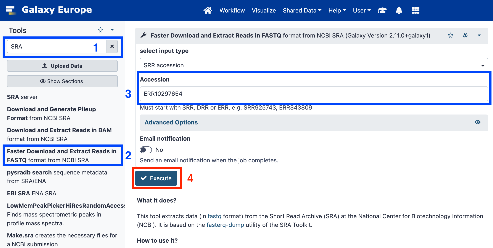
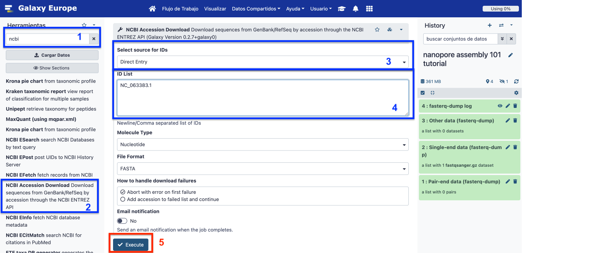
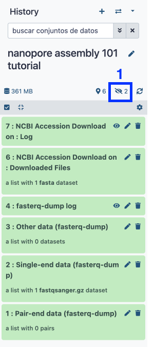
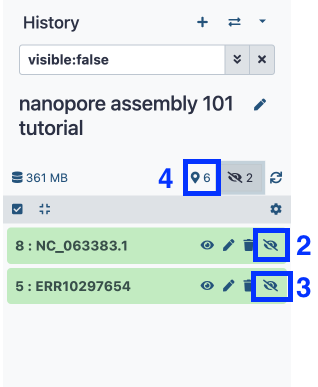
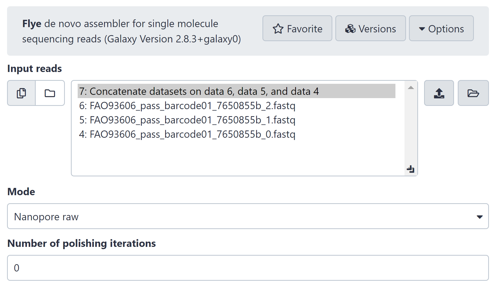
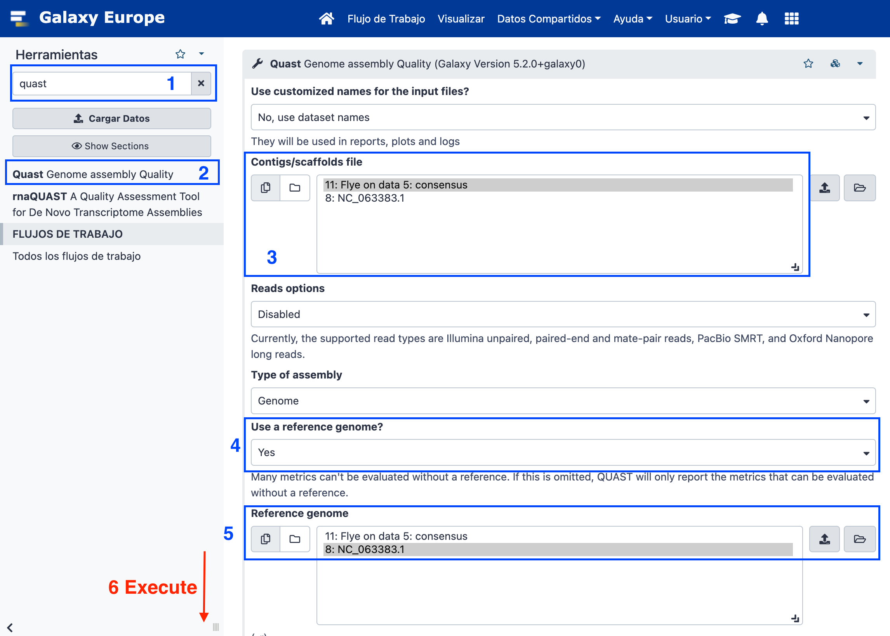
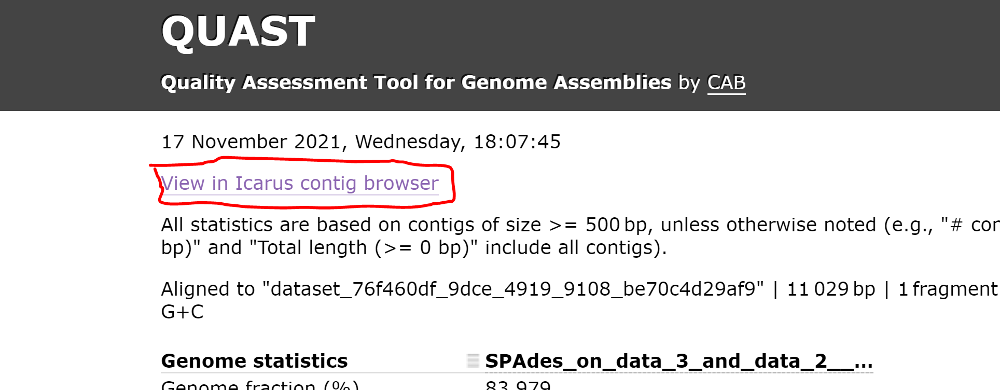
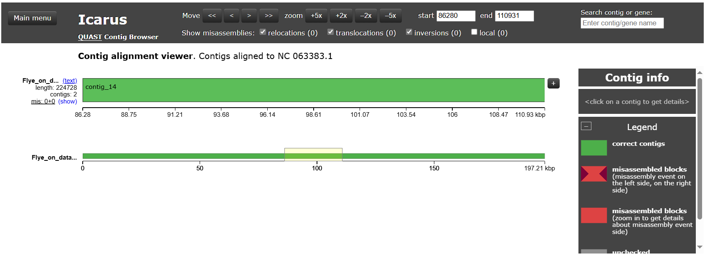

| Title | Galaxy |
|---|---|
| Training dataset: | Nanopore MinION Sequencing of a Monkey Pox Virus (MPXV) from Spain 2022 oubreak. Data is publicly available at SRA with ID ERR10297654. Paper. |
| Questions: |
|
| Objectives: |
|
| Estimated time: | 40 min |
Nanopore techology is a third generation sequencing technique which enables the obtaining of longer sequences, but with reduced sequence quality. Different technologies have different formats, qualities, and specific known biases which make the analysis different among them.
In this tutorial, we will see an example of how to assemble long reads from a Nanopore sequencing run.
+ icon at the top of the history panel and create a new history with the name Nanopore assembly 101 tutorial as explained here.SRA in the tool search bar and select Faster Download and Extract Reads in FASTQ format from NCBI SRA.ERR10297654.
NCBI using the search toolbox and select NCBI Accession Download Download sequences from GenBank/RefSeq by accession through the NCBI ENTREZ API.
Using SRA and NCBI API downloads data as hidden so we are going to unhide this data as follows:


Flye assembler using the search toolbox and select Flye de novo assembler for single molecule sequencing reads.

Click on the eye icon from the QUAST HTML report.
Open the Icarus viewer in the QUAST report.


This training history is available at: https://usegalaxy.eu/u/s.varona/h/nanopore-assembly-101-tutorial
NOTE: Nanopore data is known to have a higher error rate than short sequencing reads. This is why assembly post-processing is strongly recommended, usually using combined sequencing aproximation with both Nanopore and Illumina reads.